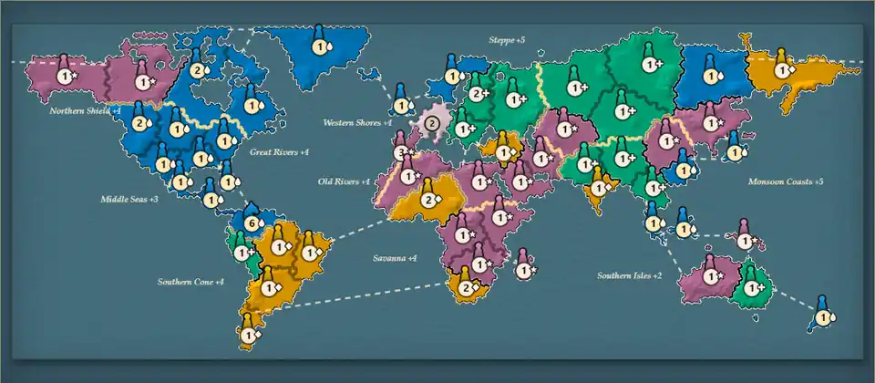
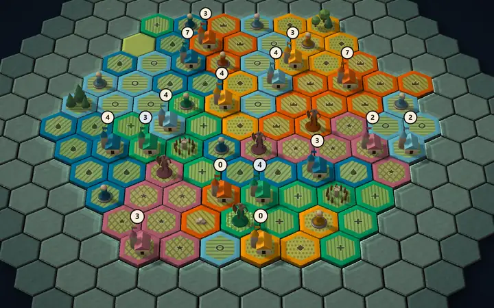
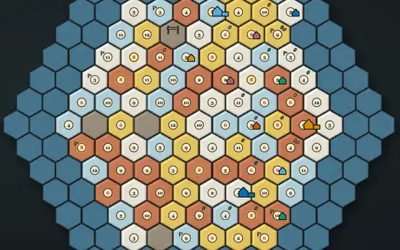
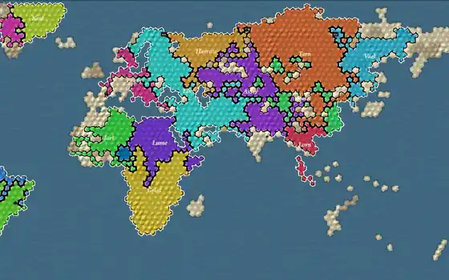
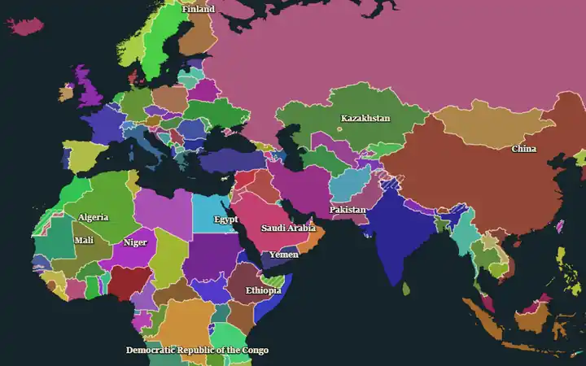

World conquest, with dice
Brass and Banners
Muster, attack, and raise your banner over the map. Fifty-seven provinces, ten lands worth holding, and cards to hand in when the moment comes.
- 2 to 6 players
- Bots or friends
- A lesson in nine steps
Five free strategy games on one world map: world conquest with dice, a hex island war, a settle-and-trade race, a real-time land grab, and a story game told by an AI you bring.

Play this gameThe table games
No AI, no account, no payment. Each one runs in your browser against bots or friends and sends nothing anywhere.

Hex island war
Villages, purses and upkeep. Cut a rival's land in two and watch the far half starve.

Settle and trade
Roll for goods, build, strike a bargain, and race to the points before the raider comes.

Real time
A land-grab among up to fifty nations, or The Ink Dries: two minutes on a page that dries from its edges.
The story game
Or live in one. You write what you do, an AI tells the story, and the rules decide wars, borders and treaties.

At every table
Traditional plays by the rules its kind of game is known for. Capo is our own shorter take. Custom hands you the switches.
Brass and Banners and The Island Fable teach themselves in a short game against a gentle bot, one sentence at a time.
The whole game travels in a link you send, turn by turn, with a password if you like. No server sits between you.
Every game and seat count is played 1,000 times by bots, and every seat wins within ten points of an even share.
Colour-blind-safe seats, patterns on the board, three text sizes, reduced motion, sound cues and bot speed, all remembered.
Saves stay in this browser or in files you hold. Take a game with you, open it anywhere, change the code.
Dispatches
v0.9.0
Every table game now opens tilted on a walnut war table, with moulded tiles, land you can read and pieces that stand on the board. Capo's world is a lit relief map with armies, fleets and fronts. Three board styles in Settings: War table, Campaign map and Clear.
v0.8.0
Capo sends agents to scout, sabotage and rescue, opens three authored starts, and can let your own AI app tell the story. The table games go deeper: hard bots in Banners and Fable, a 24-island voyage, scored rounds in Banners, and calling an attack back in An Inch of Ink.
v0.7.0
Six alternate histories and five generated fantasy worlds, each with its own map, plus a deeper Capo: ambitions, crises, causes for war and the press.
On the road map
For desktop, in the making
The desktop game, made in Godot: a deep world that runs itself with no AI needed, script mods, and server-checked play between players.
Follow the work on GitHub (opens in a new tab)Talk, make promises, then everyone writes their orders at once. No dice.
Two gardeners share a bed of tiles around a pond. Link plants that grow well together and close a ring to win.
Stack stones up to three high. Only the top stone acts, and taller stacks strike further.
The Coda rules for every table game: each game changes the next. Start from a shared story or design one with an AI.
Open source